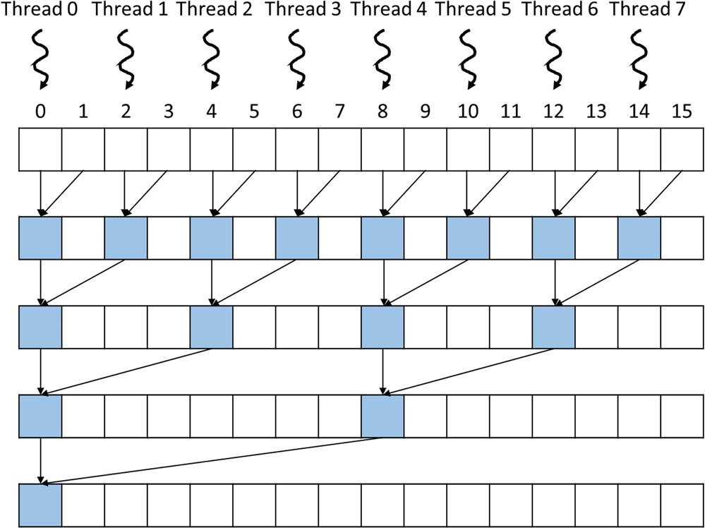
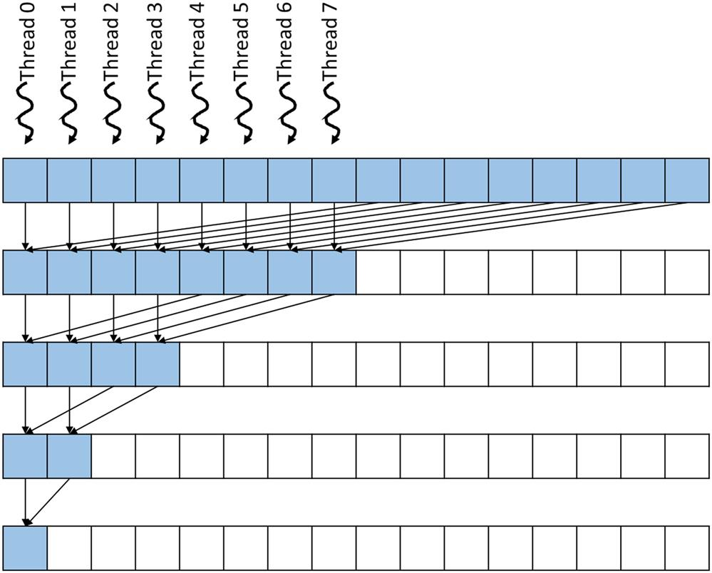
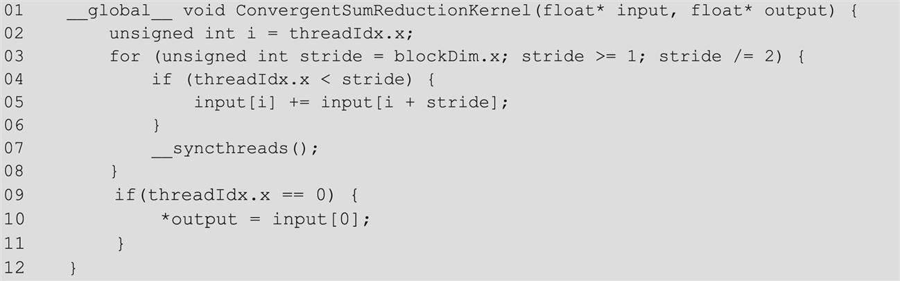
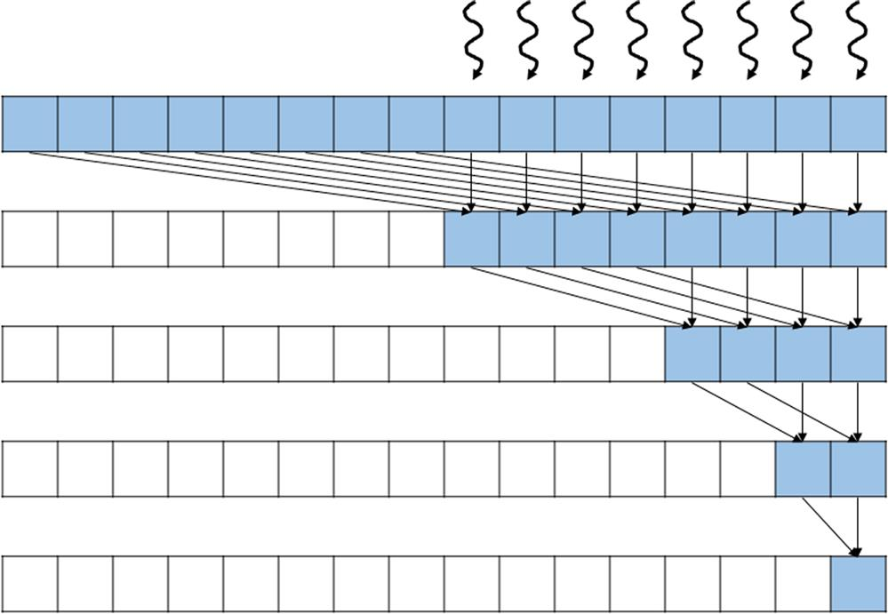
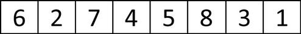
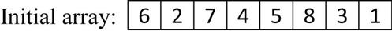

This chapter introduces the parallel reduction pattern that plays an important role in many data-processing applications. Reduction operators that are associative and commutative allow the reduction computation to be parallelized into a reduction tree and optimized aggressively with several optimization techniques, such as thread index assignment for reduced control and memory divergence, using shared memory for reduced global memory accesses, thread coarsening, and segmented reduction, that are needed to achieve high performance for large inputs.
Reduction trees; associative operators; commutative operators; identity value; control divergence; memory coalescing; memory divergence; execution resource utilization efficiency; speedup; thread coarsening; barrier synchronization; segmented reduction; thread index to data index mapping
A reduction derives a single value from an array of values. The single value could be the sum, the maximum value, the minimal value, and so on among all elements. The value can also be of various types: integer, single-precision floating-point, double-precision floating-point, half-precision floating-point, characters, and so on. All these types of reductions have the same computation structure. Like a histogram, reduction is an important computation pattern, as it generates a summary from a large amount of data. Parallel reduction is an important parallel pattern that requires parallel threads to coordinate with each other to get correct results. Such coordination must be done carefully to avoid performance bottlenecks, which are commonly found in parallel computing systems. Parallel reduction is therefore a good vehicle for illustrating these performance bottlenecks and introducing techniques for mitigating them.
Mathematically, a reduction can be defined for a set of items based on a binary operator if the operator has a well-defined identity value. For example, a floating-point addition operator has an identity value of 0.0; that is, an addition of any floating-point value v and value 0.0 results in the value v itself. Thus a reduction can be defined for a set of floating-point numbers based on the addition operator that produces the sum of all the floating-point numbers in the set. For example, for the set {7.0, 2.1, 5.3, 9.0, 11.2}, the sum reduction would produce 7.0+2.1+5.3+9.0+11.2=34.6.
A reduction can be performed by sequentially going through every element of the array. Fig. 10.1 shows a sequential sum reduction code in C. The code initializes the result variable sum to the identity value 0.0. It then uses a for-loop to iterate through the input array that holds the set of values. During the ith iteration, the code performs an addition operation on the current value of sum and the ith element of the input array. In our example, after iteration 0, the sum variable contains 0.0+7.0=7.0. After iteration 1, the sum variable contains 7.0+2.1=9.1. Thus after each iteration, another value of the input array would be added (accumulated) to the sum variable. After iteration 5, the sum variable contains 34.6, which is the reduction result.
Reduction can be defined for many other operators. A product reduction can be defined for a floating-point multiplication operator whose identity value is 1.0. A product reduction of a set of floating-point numbers is the product of all these numbers. A minimum (min) reduction can be defined for a minimum comparison operator that returns the smaller value of the two inputs. For real numbers, the identity value for the minimum operator is +∞. A maximum (max) reduction can be defined for a maximum (max) comparison operator that returns the larger value of the two input. For real numbers, the identity value for the maximum operator is −∞.
Fig. 10.2 shows a general form of reduction for an operator, which is defined as a function that takes two inputs and returns a value. When an element is visited during an iteration of the for-loop, the action to take depends on the type of reduction being performed. For example, for a max reduction the Operator function performs a comparison between the two inputs and returns the larger value of the two. For a min reduction the values of the two inputs are compared by the operator function, and the smaller value is returned. The sequential algorithm ends when all the elements have been visited by the for-loop. For a set of N elements the for-loop iterates N iterations and produces the reduction result at the exit of the loop.
Parallel reduction algorithms have been studied extensively in the literature. The basic concept of parallel reduction is illustrated in Fig. 10.3, where time progresses downwards in the vertical direction and the activities that threads perform in parallel in each time step are shown in the horizontal direction.
During the first round (time step), four max operations are performed in parallel on the four pairs of the original elements. These four operations produce partial reduction results: the four larger values from the four pairs of original elements. During the second time step, two max operations are performed in parallel on the two pairs of partial reduction results and produce two partial results that are even closer to the final reduction result. These two partial results are the largest value of the first four elements and the largest value of the second four elements in the original input. During the third and final time step, one max operation is performed to generate the final result, the largest value 7 from the original input.
Note that the order of performing the operations will be changed from a sequential reduction algorithm to a parallel reduction algorithm. For example, for the input at the top of Fig. 10.3, a sequential max reduction like the one in Fig. 10.2 would start first by comparing the identity value (−∞) in acc with the input value 3 and update acc with the winner, which is 3. It will then compare the value of acc (3) with the input value 1 and update acc with the winner, which is 3. This will be followed by comparing the value of acc (3) with the input value 7 and updating acc with the winner, which is 7. However, in the parallel reduction of Fig. 10.3 the input value 7 is first compared with the input value 0 before it is compared against the maximum of 3 and 1.
As we have seen, parallel reduction assumes that the order of applying the operator to the input values does not matter. In a max reduction, no matter what the order is for applying the operator to the input values, the outcome will be the same. This property is guaranteed mathematically if the operator is associative. An operator Θ is associative if (a Θ b) Θ c=a Θ (b Θ c). For example, integer addition is associative ((1+2)+3=1+(2+3)=6), whereas integer subtraction is not associative ((1−2)−3 . That is, if an operator is associative, one can insert parentheses at arbitrary positions of an expression involving the operator and the results are all the same. With this equivalence relation, one can convert any order of operator application to any other order while preserving the equivalence of results. Strictly speaking, floating-point additions are not associative, owing to potentially rounding results for different ways of introducing parentheses. However, most applications accept floating-point operation results to be the same if they are within a tolerable difference from each other. Such definition allows developers and compiler writers to treat floating-point addition as an associative operator. Interested readers are referred to Appendix A for a detailed treatment.
The conversion from the sequential reduction in Fig. 10.2 to the reduction tree in Fig. 10.3 requires that the operator be associative. We can think of a reduction as a list of operations. The difference of ordering between Fig. 10.2 and Fig. 10.3 is just inserting parenthesis at different positions of the same list. For Fig. 10.2, the parentheses are:
((((((3 max 1) max 7) max 0) max 4) max 1) max 6) max 3
Whereas the parentheses for Fig. 10.3 are:
((3 max 1) max (7 max 0)) max ((4 max 1) max (6 max 3))
We will apply an optimization in Section 10.4 that not only rearranges the order of applying the operator but also rearranges the order of the operands. To rearrange the order of the operands, this optimization further requires the operator to be commutative. An operator is commutative if a Θ b=b Θ a. That is, the position of the operands can be rearranged in an expression and the results are the same. Note that the max operator is also commutative, as are many other operators such as min, sum, and product. Obviously, not all operators are commutative. For example, addition is commutative (1+2=2+1), whereas integer subtraction is not (1−2≠2−1).
The parallel reduction pattern in Fig. 10.3 is called a reduction tree because it looks like a tree whose leaves are the original input elements and whose root is the final result. The term reduction tree is not to be confused with tree data structures, in which the nodes are linked either explicitly with pointers or implicitly with assigned positions. In reduction trees the edges are conceptual, reflecting information flow from operations performed in one time step to those in the next time step.
The parallel operations result in significant improvement over the sequential code in the number of time steps needed to produce the final result. In the example in Fig. 10.3 the for-loop in the sequential code iterates eight times, or takes eight time steps, to visit all of the input elements and produce the final result. On the other hand, with the parallel operations in Fig. 10.3 the parallel reduction tree approach takes only three time steps: four max operations during the first time step, two during the second, and one during the third. This is a decrease of 5/8=62.5% in terms of number of time steps, or a speedup of 8/3=2.67. There is, of course, a cost to the parallel approach: One must have enough hardware comparators to perform up to four max operations in the same time step. For N input values, a reduction tree performs ½ N operations during the first round, ¼ N operations in the second round, and so on. Therefore the total number of operations that are performed is defined by the geometric series ½ N+¼ N+1/8 N+… 1/N N=N−1 operations, which is similar to the sequential algorithm.
In terms of time steps, a reduction tree takes log2N steps to complete the reduction process for N input values. Thus it can reduce N=1024 input values in just ten steps, assuming that there are enough execution resources. During the first step, we need ½ N=512 execution resources! Note that the number of resources that are needed diminishes quickly as we progress in time steps. During the final time step, we need to have only one execution resource. The level of parallelism at each time step is the same as the number of execution units that are required. It is interesting to calculate the average level of parallelism across all time steps. The average parallelism is the total number of operations that are performed divided by the number of time steps, which is (N−1)/log2N. For N=1024 the average parallelism across the ten time steps is 102.3, whereas the peak parallelism is 512 (during the first time step). Such variation in the level of parallelism and resource consumption across time steps makes reduction trees a challenging parallel pattern for parallel computing systems.
Fig. 10.5 shows a sum reduction tree example for eight input values. Everything we presented so far about the number of time steps and resources consumed for max reduction trees is also applicable to sum reduction trees. It takes log28=3 time steps to complete the reduction using a maximum of four adders. We will use this example to illustrate the design of sum reduction kernels.
We are now ready to develop a simple kernel to perform the parallel sum reduction tree shown in Fig. 10.5. Since the reduction tree requires collaboration across all threads, which is not possible across an entire grid, we will start by implementing a kernel that performs a sum reduction tree within a single block. That is, for an input array of N elements we will call this simple kernel and launch a grid with one block of ½N threads. Since a block can have up to 1024 threads, we can process up to 2048 input elements. We will eliminate this limitation in Section 10.8. During the first time step, all ½N threads will participate, and each thread adds two elements to produce ½N partial sums. During the next time step, half of the threads will drop off, and only ¼N threads will continue to participate to produce ¼N partial sums. This process will continue until the last time step, in which only one thread will remain and produce the total sum.
Fig. 10.6 shows the code of the simple sum kernel function, and Fig. 10.7 illustrates the execution of the reduction tree that is implemented by this code. Note that in Fig. 10.7 the time progresses from top to bottom. We assume that the input array is in the global memory and that a pointer to the array is passed as an argument when the kernel function is called. Each thread is assigned to a data location that is 2*threadIdx.x (line 02). That is, the threads are assigned to the even locations in the input array: thread 0 to input[0], thread 1 to input[2], thread 2 to input[4], and so on, as shown in the top row of Fig. 10.7. Each thread will be the “owner” of the location to which it is assigned and will be the only thread that writes into that location. The design of the kernel follows the “owner computes” approach, in which every data location is owned by a unique thread and can be updated only by that owner thread.

The top row of Fig. 10.7 shows the assignment of threads to the locations of the input array, and each of the subsequent rows shows the writes to the input array locations at each time step, that is, iteration of the for-loop in Fig. 10.6 (line 03). The locations that the kernel overwrites in each iteration of the for-loop are marked as filled positions of the input array in Fig. 10.7. For example, at the end of the first iteration, locations with even indices are overwritten with the partial sums of pairs of the original elements (0–1, 2–3, 4–5, etc.) in the input array. At the end of the second iteration, the locations whose indices are multiples of 4 are overwritten with the partial sum of four adjacent original elements (0–3, 4–7, etc.) in the input array.
In Fig. 10.6 a stride variable is used for the threads to reach for the appropriate partial sums for accumulation into their owner locations. The stride variable is initialized to 1 (line 03). The value of the stride variable is doubled in each iteration so the stride variable value will be 1, 2, 4, 8, etc., until it becomes greater than blockIdx.x, the total number of threads in the block. As shown in Fig. 10.7, each active thread in an iteration uses the stride variable to add into its owned location the input array element that is of distance stride away. For example, in iteration 1, Thread 0 uses stride value 1 to add input[1] into its owned position input[0]. This updates input[0] to the partial sum of the first pair of original values of input[0] and input[1]. In the second iteration, Thread 0 uses stride value 2 to add input[2] to input[0]. At this time, input[2] contains the sum of the original values of input[2] and input[3] and input[0] contains the sum of the original values of input[0] and input[1]. So, after the second iteration, input[0] contains the sum of the original values of the first four elements of the input array. After the last iteration, input[0] contains the sum of all original elements of the input array and thus the result of the sum reduction. This value is written by Thread 0 as the final output (line 10).
We now turn to the if-statement in Fig. 10.6 (line 04). The condition of the if-statement is set up to select the active threads in each iteration. As shown in Fig. 10.7, during iteration n, the threads whose thread index (threadIdx.x) values are multiples of 2n are to perform addition. The condition is threadIdx.x % stride == 0, which tests whether the thread index value is a multiple of the value of the stride variable. Recall that the value of stride is 1, 2, 4, 8, … through the iterations, or 2n for iteration n. Thus the condition indeed tests whether the thread index values are multiples of 2n. Recall that all threads execute the same kernel code. The threads whose thread index value satisfies the if-condition are the active threads that perform the addition statement (line 05). The threads whose thread index values fail to satisfy the condition are the inactive threads that skip the addition statement. As the iterations progress, fewer and fewer threads remain active. At the last iteration, only thread 0 remains active and produces the sum reduction result.
The __syncthreads() statement (line 07 of Fig. 10.6) in the for-loop ensures that all partial sums that were calculated by the iteration have been written into their destination locations in the input array before any one of threads is allowed to begin the next iteration. This way, all threads that enter an iteration will be able to correctly use the partial sums that were produced in the previous iteration. For example, after the first iteration the even elements will be replaced by the pairwise partial sums. The __syncthreads() statement ensures that all these partial sums from the first iteration have indeed been written to the even locations of the input array and are ready to be used by the active threads in the second iteration.
The kernel code in Fig. 10.6 implements the parallel reduction tree in Fig. 10.7 and produces the expected sum reduction result. Unfortunately, its management of active and inactive threads in each iteration results in a high degree of control divergence. For example, as shown in Fig. 10.7, only those threads whose threadIdx.x values are even will execute the addition statement during the second iteration. As we explained in Chapter 4, Compute Architecture and Scheduling, control divergence can significantly reduce the execution resource utilization efficiency, or the percentage of resources that are used in generating useful results. In this example, all 32 threads in a warp consume execution resources, but only half of them are active, wasting half of the execution resources. The waste of execution resources due to divergence increases over time. During the third iteration, only one-fourth of the threads in a warp are active, wasting three-quarters of the execution resources. During iteration 5, only one out of the 32 threads in a warp are active, wasting 31/32 of the execution resources.
If the size of the input array is greater than 32, entire warps will become inactive after the fifth iteration. For example, for an input size of 256, 128 threads or four warps would be launched. All four warps would have the same divergence pattern, as we explained in the previous paragraph for iterations 1 through 5. During the sixth iteration, warp 1 and warp 3 would become completely inactive and thus exhibit no control divergence. On the other hand, warp 0 and warp 2 would have only one active thread, exhibiting control divergence and wasting 31/32 of the execution resource. During the seventh iteration, only warp 0 would be active, exhibiting control divergence and wasting 31/32 of the execution resource.
In general, the execution resource utilization efficiency for an input array of size N can be calculated as the ratio between the total number of active threads to the total number of execution resources that are consumed. The total number of execution resources that are consumed is proportional to the total number of active warps across all iterations, since every active warp, no matter how few of its threads are active, consumes full execution resources. This number can be calculated as follows:
Here, N/64 is the total number of warps that are launched, since N/2 threads will be launched and every 32 threads form a warp. The N/64 term is multiplied by 5 because all launched warps are active for five iterations. After the fifth iteration the number of warps is reduced by half in each successive iteration. The expression in parentheses gives the total number of active warps across all the iterations. The second term reflects that each active warp consumes full execution resources for all 32 threads regardless of the number of active threads in these warps. For an input array size of 256, the consumed execution resource is (4*5+2+1)*32=736.
The number of execution results committed by the active threads is the total number of active threads across all iterations:
The terms in the parenthesis give the active threads in the first five iterations for all N/64 warps. Starting at the sixth iteration, the number of active warps is reduced by half in each iteration, and there is only one active thread in each active warp. For an input array size of 256, the total number of committed results is 4*(32+16+8+4+2+1)+2+1=255. This result should be intuitive because the total number of operations that are needed to reduce 256 values is 255.
Putting the previous two results together, we find that the execution resource utilization efficiency for an input array size of 256 is 255/736=0.35. This ratio states that the parallel execution resources did not achieve their full potential in speeding up this computation. On average, only about 35% of the resources consumed contributed to the sum reduction result. That is, we used only about 35% of the hardware’s potential to speed up the computation.
Based on this analysis, we see that there is widespread control divergence across warps and over time. As the reader might have wondered, there may be a better way to assign threads to the input array locations to reduce control divergence and improve resource utilization efficiency. The problem with the assignment illustrated in Fig. 10.7 is that the partial sum locations become increasingly distant from each other, and thus the active threads that own these locations are also increasingly distant from each other as time progresses. This increasing distance between active threads contributes to the increasing level of control divergence.
There is indeed a better assignment strategy that significantly reduces control divergence. The idea is that we should arrange the threads and their owned positions so that they can remain close to each other as time progresses. That is, we would like to have the stride value decrease, rather than increase, over time. The revised assignment strategy is shown in Fig. 10.8 for an input array of 16 elements. Here, we assign the threads to the first half of the locations. During the first iteration, each thread reaches halfway across the input array and adds an input element to its owner location. In our example, thread 0 adds input[8] to its owned position input[0], thread 1 adds input[9] to its owned position input[1], and so on. During each subsequent iteration, half of the active threads drop off, and all remaining active threads add an input element whose position is the number of active threads away from its owner position. In our example, during the third iteration there are two remaining active threads: Thread 0 adds input[2] into its owned position input[0], and thread 1 adds input[3] into its owned position input[1]. Note that if we compare the operation and operand orders of Fig. 10.8 to Fig. 10.7, there is effectively a reordering of the operands in the list rather than just inserting parentheses in different ways. For the result to always remain the same with such reordering, the operation must be commutative as well as being associative.

Fig. 10.9 shows a kernel with some subtle but critical changes to the simple kernel in Fig. 10.6. The owner position variable i is set to threadIdx.x rather than 2*threadIdx.x (line 02). Thus the owner positions of all threads are now adjacent to each other, as illustrated in Fig. 10.8. The stride value is initialized as blockDim.x and is reduced by half until it reaches 1 (line 03). In each iteration, only the threads whose indices are smaller than the stride value remain active (line 04). Thus all active threads are of consecutive thread indices, as shown in Fig. 10.8. Instead of adding neighbor elements in the first round, it adds elements that are half a section away from each other, and the section size is always twice the number of remaining active threads. All pairs that are added during the first round are blockDim.x away from each other. After the first iteration, all the pairwise sums are stored in the first half of the input array, as shown in Fig. 10.8. The loop divides the stride by 2 before entering the next iteration. Thus for the second iteration the stride variable value is half of the blockDim.x value. That is, the remaining active threads add elements that are a quarter of a section away from each other during the second iteration.

The kernel in Fig. 10.9 still has an if-statement (line 04) in the loop. The number of threads that execute an addition operation (line 06) in each iteration is the same as in Fig. 10.6. Then why should there be a difference in control divergence between the two kernels? The answer lies in the positions of threads that perform the addition operation relative to those that do not. Let us consider the example of an input array of 256 elements. During the first iteration, all threads are active, so there is no control divergence. During the second iteration, threads 0 through 63 execute the add statement (active), while threads 64 through 127 do not (inactive). The pairwise sums are stored in elements 0 through 63 during the second iteration. Since the warps consist of 32 threads with consecutive threadIdx.x values, all threads in warp 0 through warp 1 execute the add statement, whereas all threads in warp 2 through warp 3 become inactive. Since all threads in each warp take the same path of execution, there is no control divergence!
However, the kernel in Fig. 10.9 does not completely eliminate the divergence caused by the if-statement. The reader should verify that for the 256-element example, starting with the fourth iteration, the number of threads that execute the addition operation will fall below 32. That is, the final five iterations will have only 16, 8, 4, 2, and 1 thread(s) performing the addition. This means that the kernel execution will still have divergence in these iterations. However, the number of iterations of the loop that has divergence is reduced from ten to five. We can calculate the total number of execution resources consumed as follows:
The part in parentheses reflects the fact that in each subsequent iteration, half of the warps become entirely inactive and no longer consume execution resources. This series continues until there is only one full warp of active threads. The last term (5*1) reflects the fact that for the final five iterations, there is only one active warp, and all its 32 threads consume execution resources even though only a fraction of the threads are active. Thus the sum in the parentheses gives the total number of warp executions through all iterations, which, when multiplied by 32, gives the total amount of execution resources that are consumed.
For our 256-element example the execution resources that are consumed are (4+2+1+5*1)*32=384, which is almost half of 736, the resources that were consumed by the kernel in Fig. 10.6. Since the number of active threads in each iteration did not change from Fig. 10.7 to Fig. 10.8, the efficiency of the new kernel in Fig. 10.9 is 255/384=66%, which is almost double the efficiency of the kernel in Fig. 10.6. Note also that since the warps are scheduled to take turns executing in a streaming multiprocessor of limited execution resources, the total execution time will also improve with the reduced resource consumption.
The difference between the kernels in Fig. 10.6 and Fig. 10.9 is small but can have a significant performance impact. It requires someone with clear understanding of the execution of threads on the single-instruction, multiple-data hardware of the device to be able to confidently make such adjustments.
The simple kernel in Fig. 10.6 has another performance issue: memory divergence. As we explained in Chapter 5, Memory Architecture and Data Locality, it is important to achieve memory coalescing within each warp. That is, adjacent threads in a warp should access adjacent locations when they access global memory. Unfortunately, in Fig. 10.7, adjacent threads do not access adjacent locations. In each iteration, each thread performs two global memory reads and one global memory write. The first read is from its owned location, the second read is from the location that is of stride distance away from its owned location, and the write is to its owned location. Since the locations owned by adjacent thread are not adjacent locations, the accesses that are made by adjacent threads will not be fully coalesced. During each iteration the memory locations that are collectively accessed by a warp are of stride distance away from each other.
For example, as shown in Fig. 10.7, when all threads in a warp perform their first read during the first iteration, the locations are two elements away from each other. As a result, two global memory requests are triggered, and half the data returned will not be used by the threads. The same behavior occurs for the second read and the write. During the second iteration, every other thread drops out, and the locations that are collectively accessed by the warp are four elements away from each other. Two global memory requests are again performed, and only one-fourth of the data returned will be used by the threads. This will continue until there is only one active thread for each warp that remains active. Only when there is one active thread in the warp will the warp perform one global memory request. Thus the total number of global memory requests is as follows:
The first term (N/64*5*2) corresponds to the first five iterations, in which all N/64 warps have two or more active threads, so each warp performs two global memory requests. The remaining terms account for the final iterations, in which each warp has only one active thread and performs one global memory request and half of the warps drop out in each subsequent iteration. The multiplication by 3 accounts for the two reads and one write by each active thread during each iteration. In the 256-element example the total number of global memory requests performed by the kernel is (4*5*2+4+2+1)*3=141.
For the kernel in Fig. 10.9 the adjacent threads in each warp always access adjacent locations in the global memory, so the accesses are always coalesced. As a result, each warp triggers only one global memory request on any read or write. As the iterations progress, entire warps drop out, so no global memory access will be performed by any thread in these inactive warps. Half of the warps drop out in each iteration until there is only one warp for the final five iterations. Therefore the total number of global memory requests performed by the kernel is as follows:
For the 256-element example the total number of global memory requests performed is ((4+2+1)+5)*3=36. The improved kernel results in 141/36=3.9× fewer global memory requests. Since DRAM bandwidth is a limited resource, the execution time is likely to be significantly longer for the simple kernel in Fig. 10.6.
For a 2048-element example the total number of global memory requests that are performed by the kernel in Fig. 10.6 is (32*5*2+32+16+8+4+2+1)*3=1149, whereas the number of global memory requests that are performed by the kernel in Fig. 10.9 is (32+16+8+4+2+1+5)*3=204. The ratio is 5.6, even more than in the 256-element example. This is because of the inefficient execution pattern of the kernel in Fig. 10.6, in which there are more active warps during the initial five iterations of the execution and each active warp triggers twice the number of global memory requests as the convergent kernel in Fig. 10.9.
In conclusion, the convergent kernel offers more efficiency in using both execution resources and DRAM bandwidth. The advantage comes from both reduced control divergence and improved memory coalescing.
The convergent kernel in Fig. 10.9 can be further improved by using shared memory. Note that in each iteration, threads write their partial sum result values out to the global memory, and these values are reread by the same threads and other threads in the next iteration. Since the shared memory has much shorter latency and higher bandwidth than the global memory, we can further improve the execution speed by keeping the partial sum results in the shared memory. This idea is illustrated in Fig. 10.10.
The strategy for using the shared memory is implemented in the kernel shown in Fig. 10.11. The idea is to use each thread to load and add two of the original elements before writing the partial sum into the shared memory (line 04). Since the first iteration is already done when accessing the global memory locations outside the loop, the for-loop starts with blockDim.x/2 (line 04) instead of blockDim.x. The __syncthreads() is moved to the beginning of the loop to ensure that we synchronize between the shared memory accesses and the first iteration of the loop. The threads proceed with the remaining iterations by reading and writing the shared memory (line 08). Finally, at the end of the kernel, thread 0 writes the sum into output, maintaining the same behavior as in the previous kernels (lines 11–13).
Using the kernel in Fig. 10.11, the number of global memory accesses are reduced to the initial loading of the original contents of the input array and the final write to input[0]. Thus for an N-element reduction the number of global memory accesses is just N+1. Note also that both global memory reads in Fig. 10.11 (line 04) are coalesced. So with coalescing, there will be only (N/32)+1 global memory requests. For the 256-element example the total number of global memory requests that are triggered will be reduced from 36 for the kernel in Fig. 10.9 to 8+1=9 for the shared memory kernel in Fig. 10.10, a 4× improvement. Another benefit of using shared memory, besides reducing the number of global memory accesses, is that the input array is not modified. This property is useful if the original values of the array are needed for some other computation in another part of the program.
All the kernels that we have studied so far assume that they will be launched with one thread block. The main reason for this assumption is that __syncthreads() is used as a barrier synchronization among all the active threads. Recall that __syncthreads() can be used only among threads in the same block. This limits the level of parallelism to 1024 threads on current hardware. For large input arrays that contain millions or even billions of elements, we can benefit from launching more threads to further accelerate the reduction process. Since we do not have a good way to perform barrier synchronization among threads in different blocks, we will need to allow threads in different blocks to execute independently.
Fig. 10.12 illustrates the concept of hierarchical, segmented multiblock reduction using atomic operations, and Fig. 10.13 shows the corresponding kernel implementation. The idea is to partition the input array into segments so that each segment is of appropriate size for a block. All blocks then independently execute a reduction tree and accumulate their results to the final output using an atomic add operation.
The partitioning is done by assigning a different value to the segment variable according to the thread’s block index (line 03). The size of each segment is 2*blockDim.x. That is, each block processes 2*blockDim.x elements. Thus when we multiply the size of each segment by blockIdx.x of a block, we have the starting location of the segment to be processed by the block. For example, if we have 1024 threads in a block, the segment size would be 2*1024=2048. The starting locations of segments would be 0 for block 0, 2048 (2048*1) for block 1, 4096 (2048*2) for block 2, and so on.
Once we know the starting location for each block, all threads in a block can simply work on the assigned segment as if it is the entire input data. Within a block, we assign the owned location to each thread by adding the threadIdx.x to the segment starting location for the block to which the thread belongs (line 04). The local variable i holds the owned location of the thread in the global input array, whereas t holds the owned location of the thread in the shared input_s array. Line 06 is adapted to use i instead of t when accessing the global input array. The for-loop from Fig. 10.11 is used without change. This is because each block has its own private input_s in the shared memory, so it can be accessed with t=threadIdx.x as if the segment is the entire input.
Once the reduction tree for-loop is complete, the partial sum for the segment is in input_s[0]. The if-statement in line 16 of Fig. 10.13 selects thread 0 to contribute the value in input_s[0] to output, as illustrated in the bottom part of Fig. 10.12. This is done with an atomic add, as shown in line 14 of Fig. 10.13. Once all blocks of the grid have completed execution, the kernel will return, and the total sum is in the memory location pointed to by output.
The reduction kernels that we have worked with so far all try to maximize parallelism by using as many threads as possible. That is, for a reduction of N elements, N/2 threads are launched. With a thread block size of 1024 threads, the resulting number of thread blocks is N/2048. However, in processors with limited execution resources the hardware may have only enough resources to execute a portion of the thread blocks in parallel. In this case, the hardware will serialize the surplus thread blocks, executing a new thread block whenever an old one has completed.
To parallelize reduction, we have actually paid a heavy price to distribute the work across multiple thread blocks. As we saw in earlier sections, hardware underutilization increases with each successive stage of the reduction tree because of more warps becoming idle and the final warp experiencing more control divergence. The phase in which the hardware is underutilized occurs for every thread block that we launch. It is an inevitable price to pay if the thread blocks are to actually run in parallel. However, if the hardware is to serialize these thread blocks, we are better off serializing them ourselves in a more efficient manner. As we discussed in Chapter 6, Performance Considerations, thread granularity coarsening, or thread coarsening for brevity, is a category of optimizations that serialize some of the work into fewer threads to reduce parallelization overhead. We start by showing an implementation of parallel reduction with thread coarsening applied by assigning more elements to each thread block. We then further elaborate on how this implementation reduces hardware underutilization.
Fig. 10.14 illustrates how thread coarsening can be applied to the example in Fig. 10.10. In Fig. 10.10, each thread block received 16 elements, which is two elements per thread. Each thread independently adds the two elements for which it is responsible; then the threads collaborate to execute a reduction tree. In Fig. 10.14 we coarsen the thread block by a factor of 2. Hence each thread block receives twice the number of elements, that is, 32 elements, which is four elements per thread. In this case, each thread independently adds four elements before the threads collaborate to execute a reduction tree. The three steps to add the four elements are illustrated by the first three rows of arrows in Fig. 10.14. Note that all threads are active during these three steps. Moreover, since the threads independently add the four elements for which they are responsible, they do not need to synchronize, and they do not need to store their partial sums to shared memory until after all four elements have been added. The remaining steps in performing the reduction tree are the same as those in Fig. 10.10.
Fig. 10.15 shows the kernel code for implementing reduction with thread coarsening for the multiblock segmented kernel. Compared to Fig. 10.13, the kernel has two main differences. The first difference is that when the beginning of the block’s segment is identified, we multiply by COARSE_FACTOR to reflect the fact that the size of the block’s segment is COARSE_FACTOR times larger (line 03). The second difference is that when adding the elements for which the thread is responsible, rather than just adding two elements (line 06 in Fig. 10.13), we use a coarsening loop to iterate over the elements and add them based on COARSE_FACTOR (lines 06–09 in Fig. 10.15). Note that all threads are active throughout this coarsening loop, the partial sum is accumulated to the local variable sum, and no calls to __syncthreads() are made in the loop because the threads act independently.
Fig. 10.16 compares the execution of two original thread blocks without coarsening serialized by the hardware, shown in Fig. 10.16A with one coarsened thread block performing the work of two thread blocks, shown in Fig. 10.16B. In Fig. 10.16A the first thread block performs one step in which each thread adds the two elements for which it is responsible. All threads are active during this step, so the hardware is fully utilized. The remaining three steps execute the reduction tree in which half the threads drop out each step, underutilizing the hardware. Moreover, each step requires a barrier synchronization as well as accesses to shared memory. When the first thread block is done, the hardware then schedules the second thread block, which follows the same steps but on a different segment of the data. Overall, the two blocks collectively take a total of eight steps, of which two steps fully utilize the hardware and six steps underutilize the hardware and require barrier synchronization and shared memory access.
By contrast, in Fig. 10.16B the same amount of data is processed by only a single thread block that is coarsened by a factor of 2. This thread block initially takes three steps in which each thread adds the four elements for which it is responsible. All threads are active during all three steps, so the hardware is fully utilized, and no barrier synchronizations or accesses to shared memory are performed. The remaining three steps execute the reduction tree in which half the threads drop out each step, underutilizing the hardware, and barrier synchronization and accesses to shared memory are needed. Overall, only six steps are needed (instead of eight), of which three steps (instead of two) fully utilize the hardware and three steps (instead of six) underutilize the hardware and require barrier synchronization and shared memory access. Therefore thread coarsening effectively reduces the overhead from hardware underutilization, synchronization, and access to shared memory.
Theoretically, we can increase the coarsening factor well beyond two. However, one must keep in mind that as we coarsen threads, less work will be done in parallel. Therefore increasing the coarsening factor will reduce the amount of data parallelism that is being exploited by the hardware. If we increase the coarsening factor too much, such that we launch fewer thread blocks than the hardware is capable of executing, we will no longer be able to take full advantage of the parallel hardware execution resources. The best coarsening factor ensures that there are enough thread blocks to fully utilize the hardware, which usually depends on the total size of the input as well as the characteristics of the specific device.
The parallel reduction pattern is important, as it plays a key row in many data-processing applications. Although the sequential code is simple, it should be clear to the reader that several techniques, such as thread index assignment for reduced divergence, using shared memory for reduced global memory accesses, segmented reduction with atomic operations, and thread coarsening, are needed to achieve high performance for large inputs. The reduction computation is also an important foundation for the prefix-sum pattern that is an important algorithm component for parallelizing many applications and will be the topic of Chapter 11, Prefix Sum (Scan).


Show how the contents of the array change after each iteration if:
